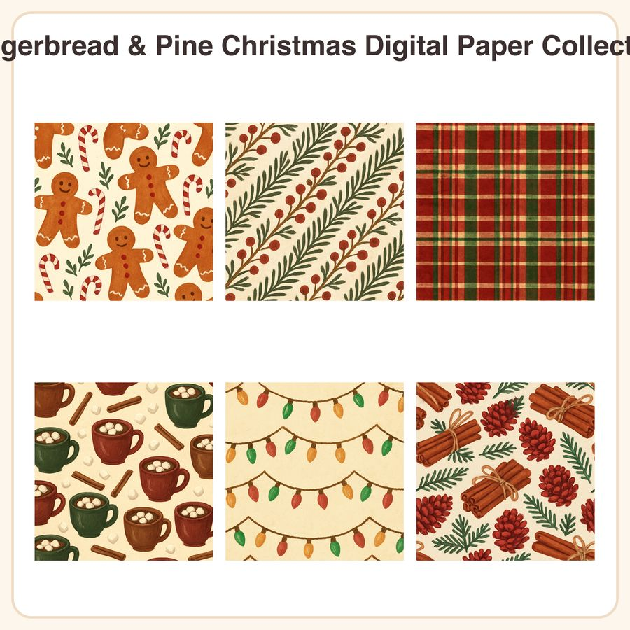

$4.99
View on EtsyCozy up your holiday projects with a warm, folk-art inspired paper collection full of gingerbread men, candy canes, cocoa mugs and cinnamon-scented charm! What's included: • 6 seamless patterns, each as a 3072px x 3072px JPEG (12x12in at 300dpi) • 6 matching repeatable PNG tiles for custom-sized projects • Designs: Gingerbread & Candy Canes Toss, Pine & Berry Garland Stripe, Holiday Tartan Plaid, Hot Cocoa & Marshmallows, Twinkling String Lights, Cinnamon & Pinecone Bundle • Palette: cinnamon brown, cranberry red, forest green and cream File formats & sizes: • JPEG: 3072x3072px, 300dpi (12x12in) • PNG: seamless repeatable tiles for scaling to any size • Delivered as a zip file, instant digital download How to use: Print for handmade cards, gift wrap, tags and scrapbook pages, or use digitally as backgrounds for social posts, planners, and party printables. Great for both physical and digital holiday projects! License: For personal and small-business commercial use (up to 500 finished items sold). Please don't resell, share, or redistribute the digital files themselves. A little honesty: these warm, hand-drawn folk-art style designs were created by our shop with the help of AI tools as part of our creative process. No physical item will be shipped—this is a digital download only. Thank you for supporting a small shop this holiday season! 🎄